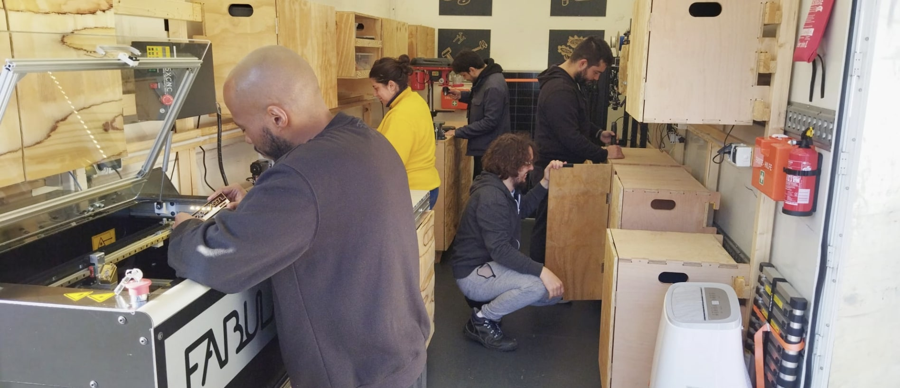
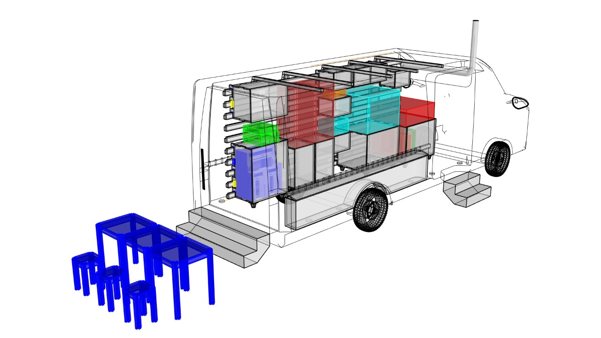
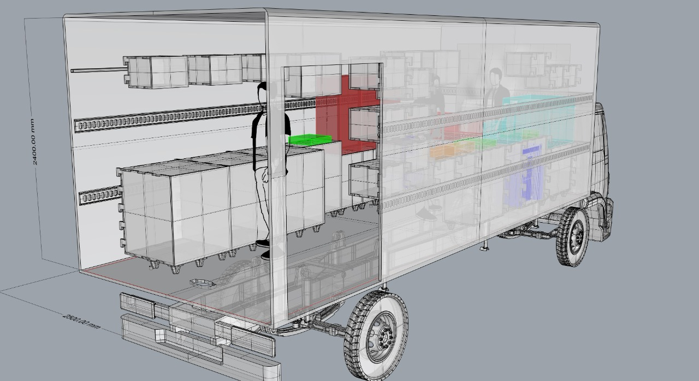
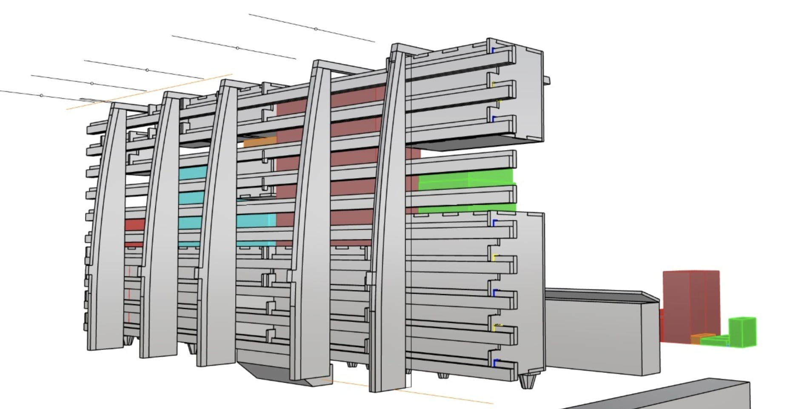
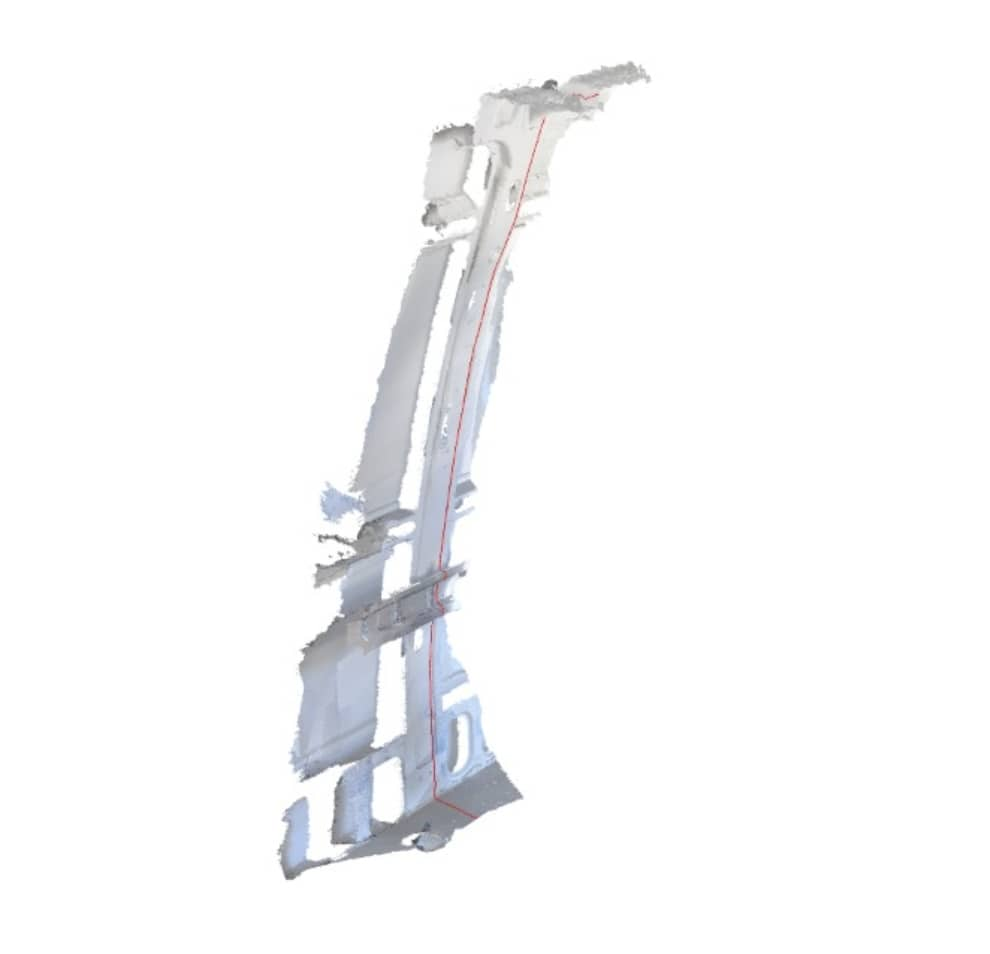
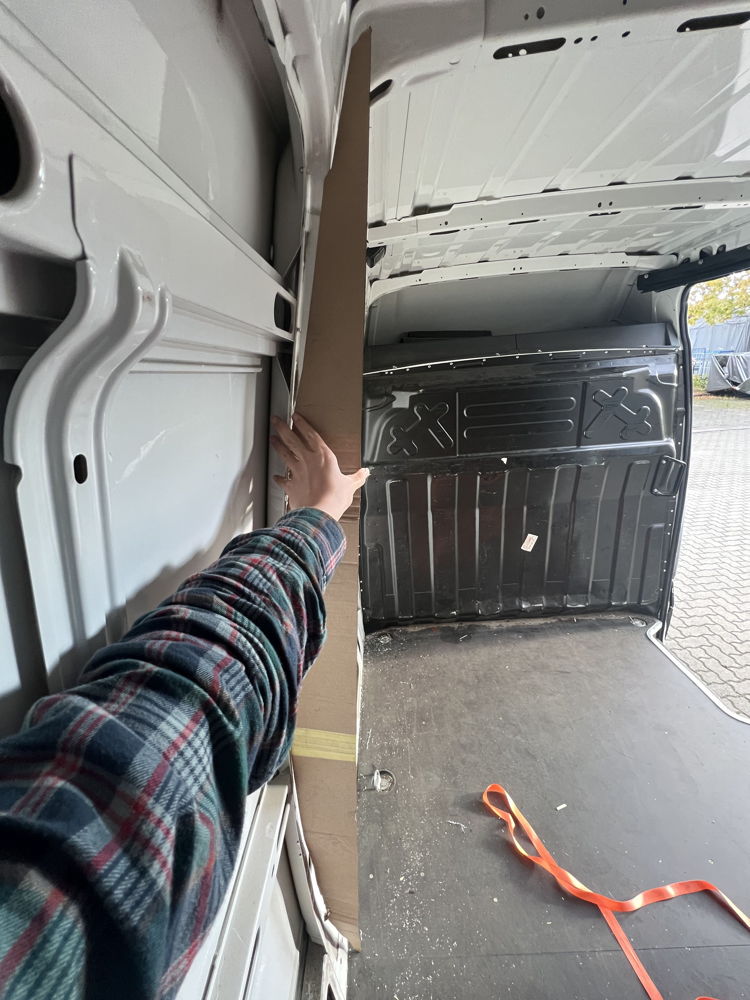
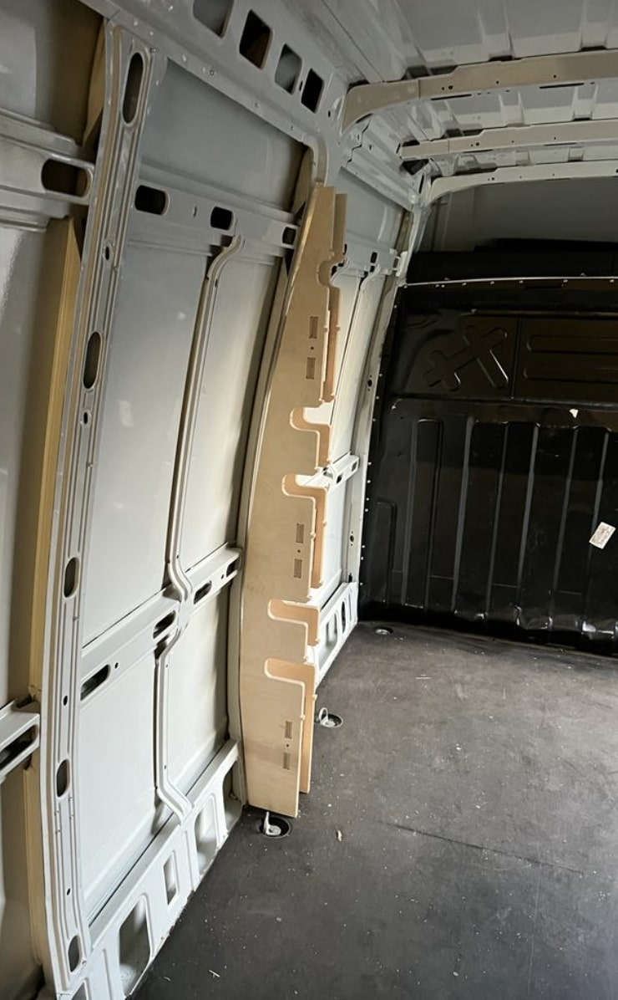
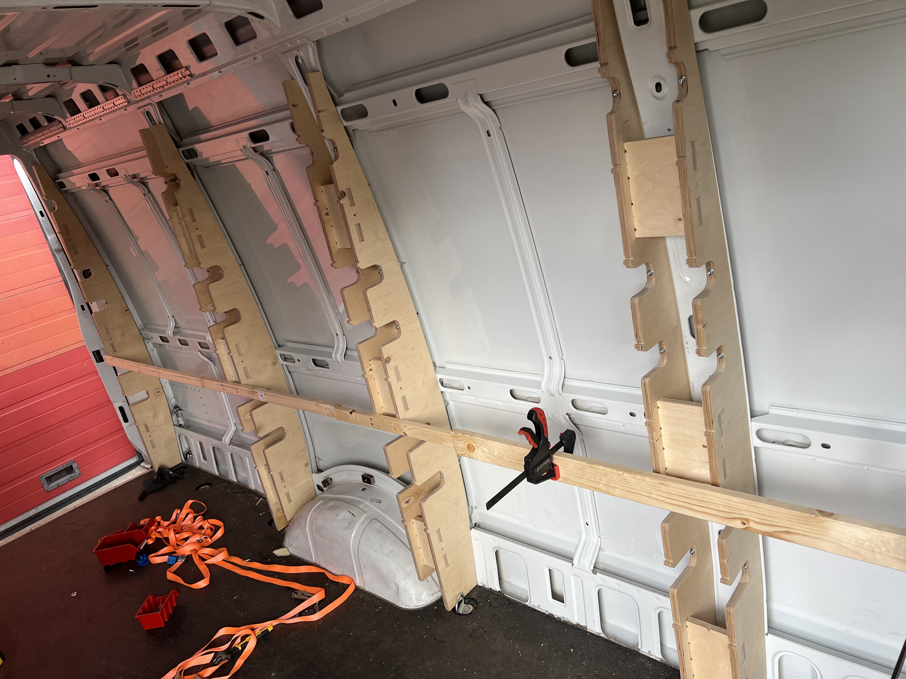
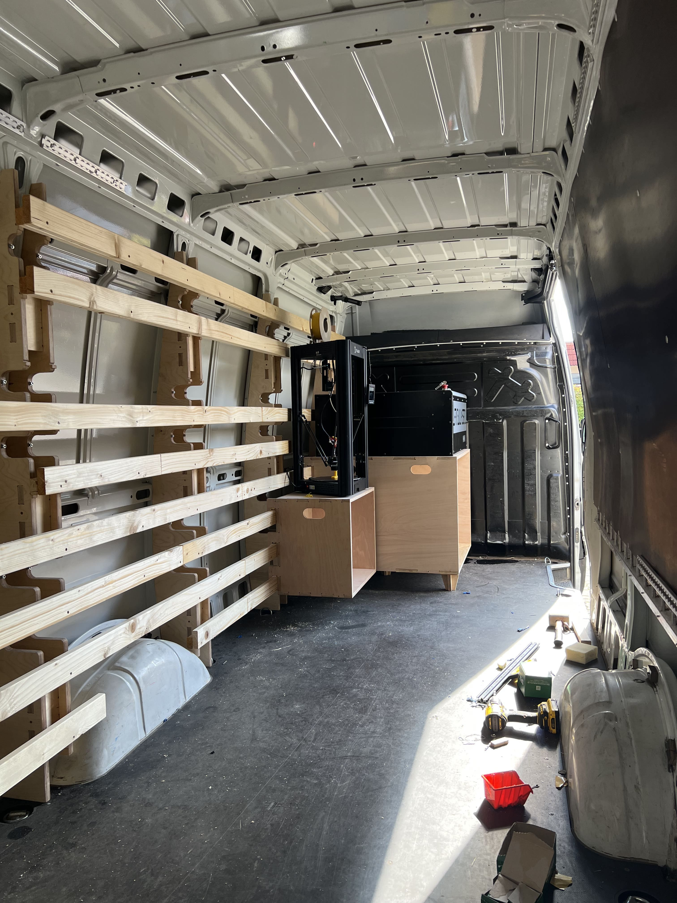

The Tolocar Project believes in the transformative power of making for rebuilding a strong, innovative, and sustainable Ukraine. The word Toloka stands for a traditional form of solidarity support in Ukraine — with that in mind, Tolocar empowers communities to help themselves and cope with local challenges by supporting makers throughout the country and deploying mobile workshops to the point of need.
A Tolocar is a converted van or truck that offers the capabilities of a makerspace or fab lab on wheels. It brings high-end manufacturing and diagnostic technologies directly to communities in need, while staying connected to a worldwide network of domain experts. The aim is to enable communities to replicate capabilities, catalyze rebuilding efforts, and establish lasting support networks.
We designed and built two mobile fab labs for Ukraine. The design is modular so it can adapt to future needs by plugging and unplugging furniture. During the early development phase, I assisted architects Daniel and Fabio in brainstorming and measuring dimensions, and designing the 3D CAD models of the two trucks.
I used the ScandyPro app on my phone to scan the wall of the 3.5-ton truck and capture its curve. That curve was used to design the structure of the furniture poles. Throughout the design process, I focused on how parts could be assembled into the truck with ease — considering why certain parts were cut and how to assemble them properly.
The mobile fab lab is equipped with a 220V AC power supply to run all fab lab machines. The battery can be charged using the vehicle engine, a household plug, or a solar panel.








